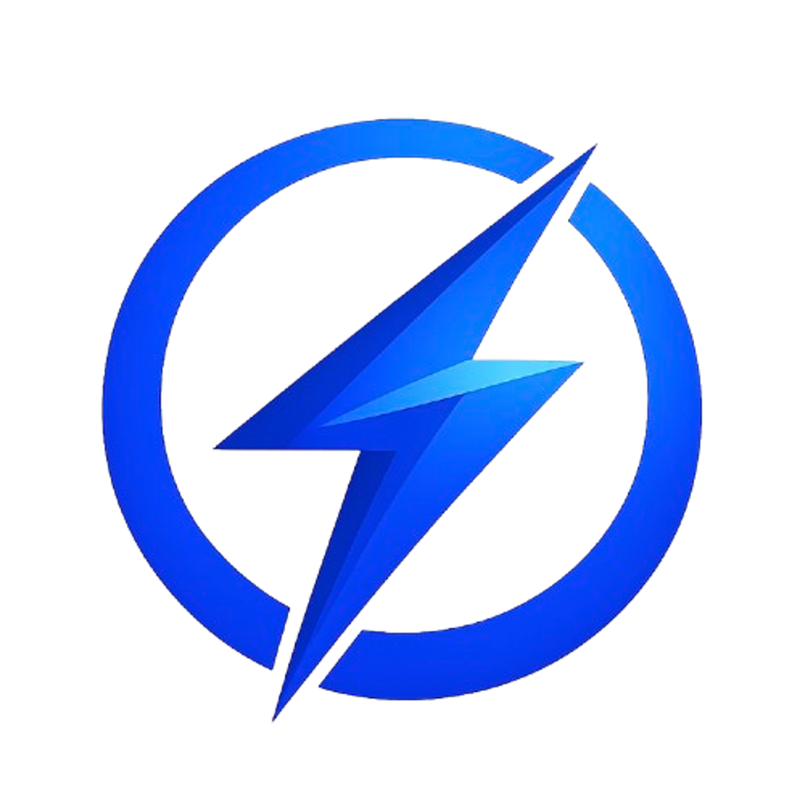

CatalystIQ Score
A 0–100 gauge of how likely today’s catalysts are to attract short-term trading attention—from “Low Attention” through “Major Catalyst.”

Find market-moving catalysts.
Catalyst intelligence for active traders. Enter a ticker—we read the latest news and SEC filings—then return a CatalystIQ Score (0–100) with sentiment, catalyst type, and a plain-English breakdown of why traders may care.
Source-grounded analysis from news and filings—no invented deals, no made-up numbers. Try one free demo analysis during onboarding before you set up keys.
A 0–100 gauge of how likely today’s catalysts are to attract short-term trading attention—from “Low Attention” through “Major Catalyst.”
OpenAI reads recent news and SEC filings only. Get attention, theme, and risk scores, sentiment, catalyst type, insight, and a “Why Traders May Care” checklist.
Search tickers, companies, crypto, futures, rates, indexes, and mutual funds from the Discover tab. Find symbols fast and jump straight into analysis.
Explore high-attention themes and the catalyst playbook to find fresh headline-driven names. CatalystIQ Plus unlocks on-demand scans and optional theme push alerts.
Track up to 25 symbols in a dedicated tab. Plus subscribers can tie the watchlist to halt and catalyst news push alerts.
Free: local alerts while the app is active for analyzed tickers or all halts. Plus: reliable push alerts when the app is closed—including your watchlist.
Skip the API-key setup. Plus subscribers get managed access to news, analysis, and alerts through our servers.
CatalystIQ Plus — $5.99/month or $29.99/year. Includes managed API access (no bring-your-own-key setup), server-proxied news and analysis, Marketstack market context, Catalyst Scan, a Watchlist (up to 25 symbols), push alerts for halts, breaking catalyst news, and scan hits, and up to 100 analyses per day.
Free tier: unlimited analyses with your own keys (OpenAI required; optional Finnhub, Marketaux, Stock News API, and FreeCryptoAPI). No Catalyst Scan, Watchlist tab, or Plus push alerts.